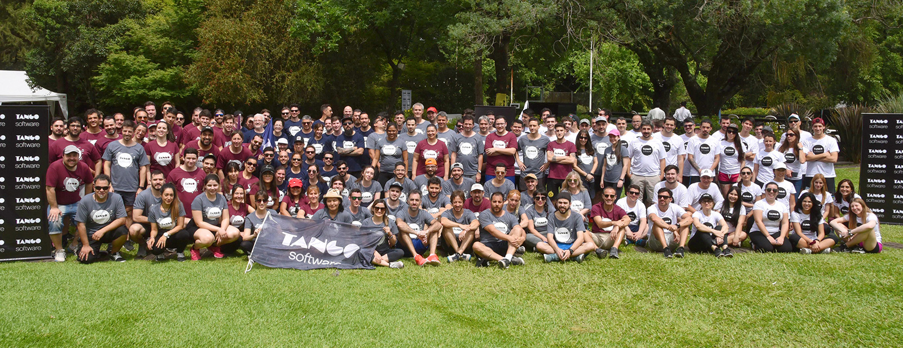

NOSOTROS POR DENTRO
Axoft Argentina
Axoft Argentina nació en el año 1988. En menos de tres años, nuestro producto Tango ganó el mercado del segmento pymes y desde entonces hemos mantenido un crecimiento sostenido incorporando permanentemente nuevas tecnologías y productos. En 1993 desarrollamos Tango para Windows siendo el primer software de gestión que trabajó en esta plataforma en el país. Desde allí siempre hemos sido pioneros en la incorporación de nuevas tecnologías y nuevas prestaciones brindando una poderosa solución a miles de clientes que confiaron en nosotros, y ha crecido junto a la red de centros de servicios, siendo la más grande de un software de gestión de Argentina. Estamos frente a un futuro con tecnologías concurrentes e interconectadas que van a producir nuevos modelos de negocios, nuevas formas de aprendizaje y diferentes usos y costumbres. En esta vorágine de cambio permanente, lo que debe mantenerse como un valor esencial para alcanzar el éxito, es el respeto al cliente. La filosofía de todos quienes conformamos Axoft, hoy más de 280 personas, se enfoca en mantener este valor inalterable a lo largo del tiempo.
